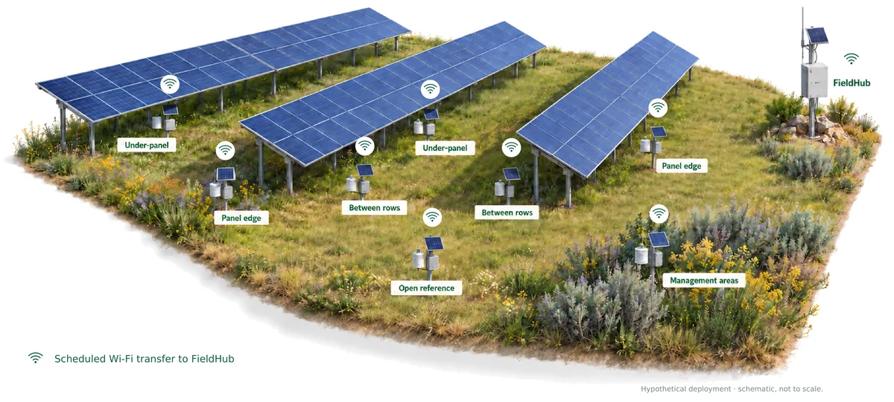

The monitoring problem
Organisms experience climate at centimetre-to-metre scales, while standard weather stations are designed for consistent regional measurements. Vegetation structure, soil moisture, topography, shade and airflow can therefore create biologically important conditions that a distant station does not represent.
This scale mismatch is especially relevant in solar photovoltaic landscapes. Under-panel zones, inter-row corridors and edges can create different radiation, wind, temperature and moisture conditions across short distances, as set out in a recent review of microclimates and biodiversity in large-scale solar facilities. The research need is for many distributed measurement points that can operate with limited power and connectivity.
One site, many measurement points
Instead of one station for a whole site, FieldMesh puts a node in each microhabitat that matters, and one FieldHub collects from all of them on a shared schedule.
On a solar farm that means nodes under the panels, at panel edges, between rows, in managed areas and at an open reference point. Each node records on its own, and the comparison between them is the measurement.

How it works
Every reading follows the same five steps from the ground to the dashboard, and at each hand-off it stays where it is until the next step confirms it has been stored.
-
Measure
Each node wakes on its real-time clock, reads its sensors with the radio off and records a timestamped snapshot.
-
Queue
The snapshot is checksummed and stored on the node, which then powers off completely until its next wake.
-
Collect
At a scheduled sync window the FieldHub gives each node its turn over ESP-NOW and writes every reading to its own storage.
-
Store
Where there is LTE coverage, the FieldHub uploads readings and device health to the cloud. Otherwise the data stays on the hub for local export.
-
Explore
The web dashboard shows readings, trends and device health for every node, and exports the data for analysis.
Local first. A node keeps each reading until the FieldHub has written it, and the hub keeps it until the backend confirms storing it, so a dropped link means a later retry, never a lost or duplicated measurement. Connectivity changes how the data is retrieved, not whether the network keeps monitoring.

The sensor node
A node is a weatherproof box with its own small solar panel and battery, mounted on a post with its instruments around it. It is fully powered off between readings, so a deployment can run for long periods without site visits.
- Light spectrumAS7341, eight bands from 415 to 680 nm plus clear and near-infrared
- Air temperature and humiditySHT4x in a radiation shield
- Wind speedReed-cup anemometer
- Soil moisture and temperatureTwo CWT TH-A probes
- Battery voltageFor device health
Raw by design: soil moisture is stored as probe voltage and light as raw counts, so calibration curves can be applied in analysis without changing the nodes.
Node V3 is the board used for the 2026 bench and field trials. Node V4 is a redesign for more kinds of sensor: an MPPT solar charger that blocks charging at unsafe battery temperatures, selectable 3.3, 5 or 12 V sensor power, protected analogue inputs, four-channel I²C expansion, RS-485/Modbus and SDI-12 for commercial sensors, and two protected pulse inputs. Its layout is complete, and the final review changes are being made before prototype production.
The FieldHub
The FieldHub is the site’s gateway: a solar-powered custom board with an ESP32, an LTE Cat-1 modem, a real-time clock and microSD storage, in a weatherproof box on a mast. It opens the sync windows, confirms each delivery and keeps everything on site.
Two ways to reach the data. With LTE, the hub uploads on its own schedule to the FieldMesh cloud or to a project’s own HTTPS endpoint. Without it, the hub runs standalone and the data is exported on site.
Set up from a phone. A button on the hub opens a password-protected setup network for 30 minutes. From there, operators find and pair nodes, name them, set the recording schedule and data destination, and start recording, with no laptop or internet needed.
FieldHub v2 brings the gateway onto one custom board. Revision 6 is in bench bring-up: on the first board, the four I²C sensor ports work at up to 400 kHz, the analogue inputs read within about 1% of a reference meter, and the SD card passes 100 consecutive mount-and-log runs after a fix to the storage library. The findings feed into the next revision.
FieldHub v2 board


The dashboard
The web dashboard is where a project team follows a deployment remotely. Projects have owners, editors and read-only viewers, and the database enforces that no project can read another’s data.
FieldHub health, live and delayed nodes, and each node’s latest readings with daily averages and trends.
Screens from the first deployment at a UNE solar farm, August–September 2026. Prototype readings, unvalidated: shown to illustrate the dashboard, not as ecological findings.
From the same interface, operators pause and resume nodes, change the recording interval, end and archive deployments, and set up new FieldHubs from a QR code that holds a short-lived, single-use provisioning code.
Cloud, security and updates
The backend runs on Supabase: PostgreSQL with Row Level Security, Auth, Edge Functions, Realtime and Storage. Each FieldHub has its own revocable key, stored only as a hash. Uploads are authenticated before they are read, size-limited and idempotent, and a device with an implausible clock cannot overwrite state recorded from a trusted one.
FieldHub firmware updates are signed with Ed25519, checked against a SHA-256 hash and installed into A/B slots, rolling back automatically if a new image fails to confirm itself after boot. A full over-the-air update has run on a bench hub; the first release through the production pipeline is still to come. A CI pipeline tests the dashboard, the database access rules, the Edge Functions and concurrent sessions.
Power and recovery design
Both tiers use a switched-power architecture rather than ESP32 deep sleep. A PWR_HOLD signal latches the power rail when the device wakes, and releasing it switches the board off completely. Only the DS3231 real-time clock stays powered, and it decides when the next measurement or sync happens. Schedule changes include grace cycles, so nodes still on the old timing are not stranded.
- Local-first data: persist measurements before attempting cloud transfer.
- Power-off by default: remove the switched rail between scheduled wakes.
- Durable acknowledgement: clear a record only after the next tier confirms storing it.
- Coordinated radio access: grant transfer windows rather than relying on contention.
- Idempotent uploads: make every retry safe to repeat.
- Version-aware configuration: keep changes repeatable and tolerant of older nodes.
- Signed, recoverable updates: verify every image and keep a known-good fallback.
Testing and field trials
Bench: multi-node validation began in May 2026, alongside ESP-NOW link testing at distances of up to 100 m. Deployment-lifecycle scenarios have been tested on-device and against the production backend.
First end-to-end path: in July 2026 three nodes carried readings through the FieldHub and LTE into the cloud database, followed by a three-node trial in Germany.
First field deployment: four nodes and a FieldHub were deployed at a UNE solar-farm study site in Australia in August 2026. Field setup drove several firmware changes, including a longer cold-start registration budget for the modem and fixes to chunked LTE uploads.
Current status
Hardware: FieldHub v2 revision 6 is in bench bring-up, with its sensor ports, analogue inputs and SD storage verified on the first board and ESP-NOW, RTC backup and longer wake-cycle tests next. The Node V4 layout is complete, with the final review changes being made before prototype production.
Network: a bench test of sync timing between the hub and multiple nodes is being set up, so that node capacity rests on measured behaviour rather than estimates.
Next: multi-week deployments to measure upload reliability and battery life under sustained field duty, calibration of the soil-moisture probes, and the first release through the production update pipeline.
Follow the project
Short updates from the bench and the field are posted on the workbench as the work happens.